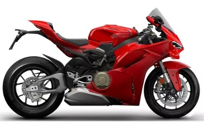

Ducati Panigale V4 R
La Ducati Panigale V4 R es una bestia italiana diseñada para la velocidad. Con su motor Desmosedici Stradale R de 998 cc, alcanza más de 240 km/h. Su diseño aerodinámico y su rugido inconfundible la convierten en una joya del motociclismo moderno.